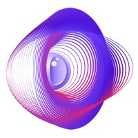
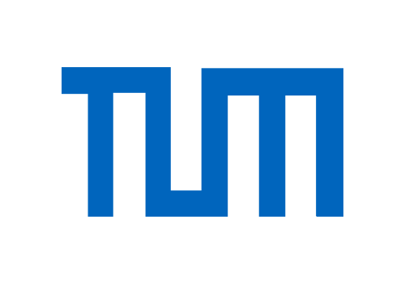

A workshop @ EurIPS 2025
December 6 or 7, 2025
Automatic differentiation is a key technology for most machine learning models and inverse problems, including surrogate models that simulate + optimize complex scientific phenomena. But can we go beyond individual models?
More precisely, can we build entire differentiable systems that combine multiple components such as adjoint-based simulators, mathematical solvers, surrogate models, and 3D renderers to tackle real scientific challenges?
This workshop aims to answer that question by bringing together experts from around the community. We expect contributions that present advances in:
(See Call for Papers for more details)
All times below are GMT+2.
| Time | Event |
|---|---|
| 09:00 - 09:15 | Opening remarks |
| 09:15 - 10:00 | Invited Talk 1 |
| 10:00 - 10:45 | Invited Talk 2 |
| 10:45 - 11:00 | Coffee Break |
| 11:00 - 12:00 | Contributed Talks (selected from submissions) |
| 12:00 - 13:00 | Panel Discussion |
| 13:00 - 14:00 | Lunch Break |
| 14:00 - 14:45 | Invited Talk 3 |
| 14:45 - 15:30 | Invited Talk 4 |
| 15:30 - 15:45 | Coffee Break |
| 15:45 - 16:45 | Contributed Talks (selected from submissions) |
| 16:45 - 18:00 | Poster Session |
Professor of Computing in Science and Engineering, Harvard University, and leading expert in AI for science.
Core maintainer of the JAX scientific software ecosystem and technical lead at Cradle Bio.
Professor of Computer Science at the Technical University of Munich, working on physics-based simulation and machine learning, and pioneer in differentiable physics research.
Siemens Energy, expert in ML + data science for real-world simulation problems.
We invite previously unpublished submissions in a form of short papers, including those describing work in progress, as long as they represent advances within one or more of the following topics:
Submission website: Submit on OpenReview
Pasteur Labs
Pasteur Labs
Pasteur Labs
Technical University Munich
University of Amsterdam